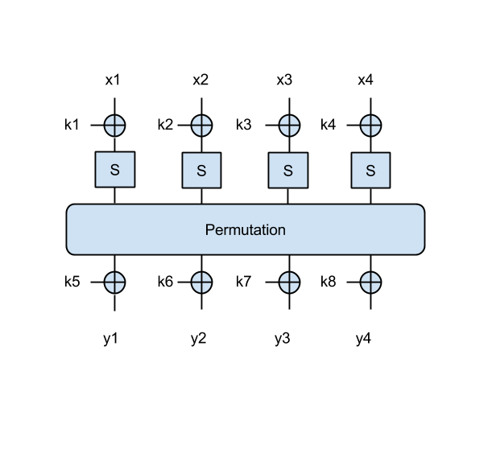

Table of Contents
Diverse exercitii
Feistel networks
How can you distinguish a cipher composed only of a Feistel network from a random function if it has only (a) one round, (b) two rounds?
For clarity, here is an image of such a cipher with two rounds:

Decryption modes
A sequence of plaintext blocks M1, . . . , M8 is encrypted using DES into a sequence of ciphertext blocks. Where an IV is used, it is numbered C0. A transmission error occurs and one bit in ciphertext block C3 changes its value. As a consequence, the receiver obtains after decryption a corrupted plaintext block sequence M1′,…,M8′. For the discussed modes of operation (ECB, CBC), how many bits do you expect to be wrong in each block Mi′? (Hint: You may find it helpful to draw decryption block diagrams.)
Please motivate your answer.
Substitution-Permutation networks
Now we have a better SPN, where the output of the permutation is XOR-ed with another 2 key bytes, as in the following figure:

- Try to find the key in this case, when given the following message/ciphertext pairs: ('Om', 0x0073), ('El', 0xd00e), ('an', 0x855b). Print the key in ascii.
More on subsitution-permutation
As another example, which uses a larger block size, let's use an SPN that takes a 4-byte input x=[x1 || x2 || x3 || x4] and an 8-byte key k=[k1 || k2 || k3 || k4 || k5 || k6 || k7 || k8] as in this figure: 
{kind=link}
Note that in this 4-byte SPN, the permutation operates on all 4 bytes, similarly to the 2-byte SPN: that is, it shifts all bits four bits to the right.
- Try to find the key in this case as well, using the following message/ciphertext pairs: ('Omul', 0xddcf7bc7), ('stea', 0x96d58b43), ('luna', 0x9c3f2303) . Again print the key in ascii.
HMAC Timing attack
In this exercise you will perform a timing attack against HMAC.
You are given access to an HMAC $\mathsf{Verify}$ oracle, which tests whether the received HMAC matches the one computed using the secret key. Timing attacks exploit naive equality comparisons between the received and computed HMACs (for example, the comparison is done byte by byte; more checks means more latency).
Your task is to produce a forged tag for the message 'Test' without knowing the key. Do this by iterating through all possible values for a specific byte; when the oracle's latency for a certain value seems larger than the rest, it suggests that the equality test returned True and the oracle passed to the next byte.
Try to start by finding the first byte and checking your result with the TA.
You can use time.clock() before and after each oracle query to measure its runtime.
- timing.py
import sys import random import string import time import itertools import operator import base64 from Crypto.Hash.HMAC import HMAC def raw2hex(raw): return raw.encode('hex') def hex2raw(hexstring): return base64.b16decode(hexstring) def slow_foo(): p = 181 k = 2 while k < p: if p % k == 0: return k += 1 def verify(message, tag): k = '0123456789ABCDEF' # Use MD5 for HMAC digest = HMAC(k, message).digest() for i in range(16): # Artificially extend byte comparison duration slow_foo() if tag[i] != digest[i]: return False return True hexdigits = '0123456789ABCDEF' def main(): message = 'Test' # Step 1. Iterate through all possible first byte values, and call the # Verify oracle for each of them # Step 2. Store the byte which caused the longest computation time # Step 3. Continue the operation for each byte (except the last) # Step 4. Guess the last byte, and query the oracle with the complete tag mytag = '???' result = verify(message, mytag) if result == True: print mytag if __name__ == "__main__": main()